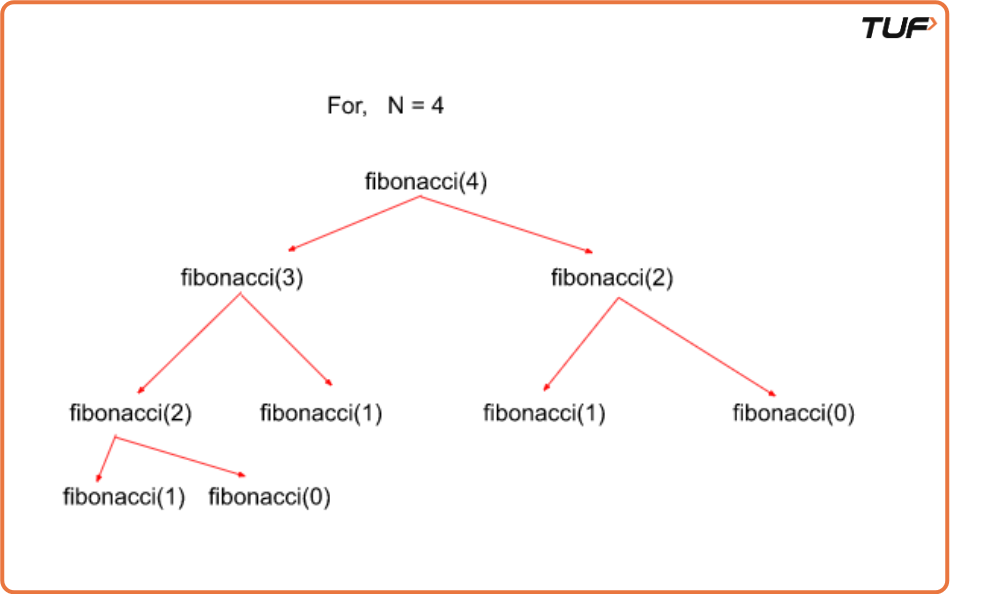

Print Fibonacci Series up to Nth term
Problem Statement: Given an integer N. Print the Fibonacci series up to the Nth term.
Examples
Example 1:
Input: N = 5
Output: 0 1 1 2 3 5
Explanation: 0 1 1 2 3 5 is the fibonacci series up to 5th term.(0 based indexing)
Example 2:
Input: 6
Output: 0 1 1 2 3 5 8
Explanation: 0 1 1 2 3 5 8 is the fibonacci series upto 6th term.(o based indexing)
Disclaimer: It's highly recommend trying to solve it before looking at the solution.
Brute Force
Algorithm
Intuition
As we know fib(i) = fib(i-1) + fib(i-2).Simply iterate and go on calculating the ith term in the series.
Approach
- Take an array say fib of size n+1.The 0th term and 1st term are 0 and 1 respectively.So fib(0)=0 and fib(1)=1.
- Now iterate from 2 to n and calculate fib(n).fib(n)=fib(n-1) + fib(n-2).
Code
#include <bits/stdc++.h>
using namespace std;
int main() {
int n = 5;
// Edge case: if n is 0, print only 0
if (n == 0) {
cout << 0;
}
// Special case: if n is 1, print first two Fibonacci numbers
else if (n == 1) {
cout << 0 << " " << 1 << "\n";
}
// General case: generate and print Fibonacci series up to nth term
else {
int fib[n + 1]; // Array to store Fibonacci numbers up to index n
fib[0] = 0;
fib[1] = 1;
// Fill the Fibonacci series using bottom-up dynamic programming
for (int i = 2; i <= n; i++) {
fib[i] = fib[i - 1] + fib[i - 2];
}
cout << "The Fibonacci Series up to " << n << "th term:" << endl;
for (int i = 0; i <= n; i++) {
cout << fib[i] << " ";
}
}
return 0;
}
Complexity Analysis
Time Complexity: O(n)+O(n), for calculating and printing the Fibonacci series.
Space Complexity: O(n) for storing the fibonacci series.
Better Approach
Algorithm
Intuition
For calculating the ith term we only need the last and second last term i.e (i-1)th and (i-2)th term, so we don't need to maintain the whole array
Approach
- Take two variables last and secondLast for storing (i-1)th and (i-2)th term.
- Now iterate from 2 to n and calculate the ith term. ith term is last + secondLast term.
- Then update secondLast term to the last term and the last term to ith term as we iterate.
Code
#include <bits/stdc++.h>
using namespace std;
int main() {
int n = 5;
// If n is 0, only the first Fibonacci number is printed
if (n == 0) {
cout << "The Fibonacci Series up to " << n << "th term:" << endl;
cout << 0;
}
else {
int secondLast = 0; // (i-2)th term
int last = 1; // (i-1)th term
cout << "The Fibonacci Series up to " << n << "th term:" << endl;
cout << secondLast << " " << last << " ";
int cur; // ith term
for (int i = 2; i <= n; i++) {
cur = last + secondLast; // ith Fibonacci number
secondLast = last; // move window forward
last = cur;
cout << cur << " ";
}
}
return 0;
}
Complexity Analysis
Time Complexity: O(N).As we are iterating over just one for a loop.
Space Complexity: O(1), no extra space used.
Optimal Approach
Algorithm
Intuition
In this approach, instead of printing the Fibonacci series till N, we’re going to print the Nth Fibonacci number using functional recursion with multiple function calls.
- Similar to all the recursion problems we’ve seen before, we need a base case in this problem too in order for recursion to not go infinitely. Here, we notice that the Fibonacci series start from N = 1, where we initialize its value as 1.
- Assume Fibonacci(0) = 0. So, Fibonacci(2) = 1+0 = 1 as the Nth Fibonacci number is the sum of the previous two Fibonacci numbers.
- Similarly, we call Fibonacci(N-1) and Fibonacci(N-2) and return their sum. Both the function calls Fibonacci(N-1) and Fibonacci(N-2) would be computed individually one by one until the base condition is reached for both and then they return back to the main function.
Let us see the recursion tree for the following problem to get an even better understanding:

Code
#include <bits/stdc++.h>
using namespace std;
// Recursive function to compute the Nth Fibonacci number
int fibonacci(int N) {
// Base case: if N is 0 or 1, return N itself
if (N <= 1) {
return N;
}
// Recursive case: sum of (N-1)th and (N-2)th Fibonacci numbers
int last = fibonacci(N - 1); // (N-1)th Fibonacci
int slast = fibonacci(N - 2); // (N-2)th Fibonacci
return last + slast;
}
int main() {
int N = 4;
cout << fibonacci(N) << endl; // Output: 3 (0 1 1 2 3)
return 0;
}
Complexity Analysis
Time Complexity: O(2^N) { This problem involves two function calls for each iteration which further expands to 4 function calls and so on which makes worst-case time complexity to be exponential in nature }.
Space Complexity: O(N) { At maximum there could be N function calls waiting in the recursion stack since we need to calculate the Nth Fibonacci number for which we also need to calculate (N-1) Fibonacci numbers before it }.